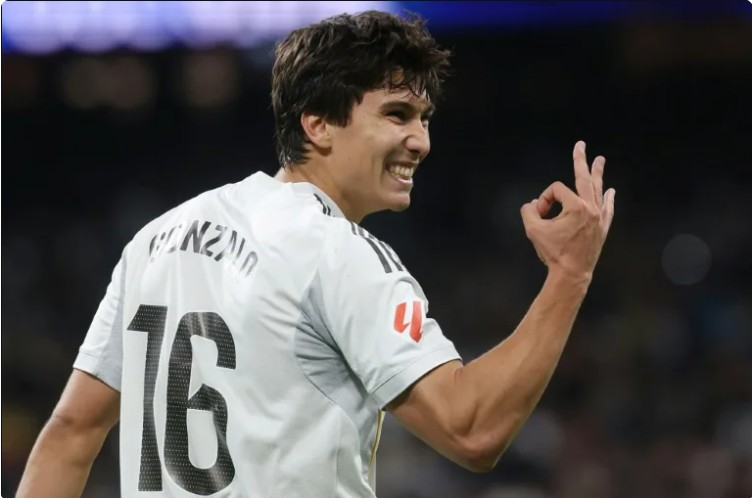

Gonzalo García hace de Mbappé y mantiene al Real Madrid en la pelea por LaLiga

Con un triplete de Gonzalo y sendos goles de los también canteranos Asencio y Fran García, el
Real Madrid derrotó este domingo 5-1 al Real Betis en la 18 fecha de LaLiga, un resultado que
permite al conjunto blanco mantenerse en la estela del líder FC Barcelona. Los goles del
conjunto blanco hicieron entrar en calor al Santiago Bernabéu en una fría tarde invernal en la
capital española, mientras que Gonzalo García, de 21 años, hizo olvidar la baja por lesión del
francés Kylian Mbappé, que presenciaba con rostro feliz desde el palco el recital de su
compañero. El aún máximo goleador del campeonato español se recupera de un esguince de rodilla.
En el primer partido del año en el feudo madridista, y antes de que los hombres de Xabi Alonso
viajen a Arabia Saudita a disputar la Supercopa de España (semifinal el jueves ante el Atlético
de Madrid), el Real Madrid demostró haber llegado en forma de las vacaciones navideñas. Después
de que el Barça abriese una brecha de siete puntos tras llevarse el sábado el derbi de Barcelona
ante el Espanyol (2-0), el conjunto merengue acortó a cuatro puntos la desventaja. - De cabeza,
volea, y tacón - Gonzalo marcó primero de cabeza en el segundo palo a pase del brasileño Rodrygo
(20').
Ya en el segundo tiempo enganchó una media volea con la diestra, previo control
con el
pecho, para batir al arquero bético Álvaro Valles (50') y selló una noche inolvidable para él
enviando al fondo de la red con un remate de tacón un pase del turco Arda Güller (82'). "Ha sido
un partido soñado para él, el jugar en el Bernabéu, primera temporada en el primer equipo y
conseguir un hat-trick, me alegro mucho por él, por el trabajo que hace diario, es un gran
ejemplo de lo que es un canterano del Real Madrid", lo alabó Xabi Alonso. Entre medias había
marcado también de cabeza el central Asencio (56'), mientras que el gol del equipo verdiblanco
fue obra del colombiano Juan Camilo Hernández (66'). Fran García, que había sustituido a Gonzalo
en los últimos compases, aún tuvo tiempo de completar la "manita" (90+4') rematando un centro
del uruguayo Fede Valverde para un Real Madrid que comenzó el año intratable.